Instance Segmentation with YOLO11 — Magnetic Tile Defect Detection¶
We have trained a detector that draws bounding boxes around PCB defects. Boxes tell us where a defect is — but not its exact shape, area, or boundary. In this session we move to instance segmentation: predicting a pixel-level mask for every defect instance.
By the end of this session you will have:
Understood how PNG masks are converted into YOLO polygon format (the core data prep step)
Trained a YOLO11n-seg model on the Magnetic Tile Defect dataset
Evaluated per-class mask IoU and compared it with box mAP
Analysed failure cases and connected results back to the class imbalance story
Dataset: Magnetic Tile Defect — 1,344 images, 5 defect classes + defect-free
Model: YOLO11n-seg (nano) pretrained on COCO, fine-tuned on Magnetic Tile
Citation: Huang et al., Surface Defect Saliency of Magnetic Tile, The Visual Computer, 2020
Expected folder layout after cloning the dataset¶
git clone https://github.com/abin24/Magnetic-tile-defect-datasets.
Magnetic-tile-defect-datasets/ ← set DATASET_ROOT below
MT_Blowhole/
Imgs/ ← .jpg images AND .png masks share the same folder
← e.g. exp1_000.jpg (image) + exp1_000.png (mask)
MT_Crack/
Imgs/
MT_Break/
Imgs/
MT_Fray/
Imgs/
MT_Uneven/
Imgs/
MT_Free/ ← defect-free images only (.jpg, no paired .png masks)
Imgs/
Important: there is no separate Annotations/ folder. Each .jpg image
is paired with a .png mask of the same filename stem in the same Imgs/ directory.
0. Setup¶
#%pip install ultralytics supervision --quiet
import os
import tempfile
miopen_dir = tempfile.mkdtemp(prefix="miopen-", dir="/tmp")
os.environ["MIOPEN_USER_DB_PATH"] = miopen_dir
os.environ["MIOPEN_CUSTOM_CACHE_DIR"] = miopen_dir
import random
import shutil
from pathlib import Path
import cv2
%matplotlib inline
import matplotlib.pyplot as plt
import matplotlib.patches as mpatches
import numpy as np
import supervision as sv
import torch
import yaml
from ultralytics import YOLO
# ── CONFIGURE THIS ──────────────────────────────────────────────────────────
DATASET_ROOT = Path("/projappl/project_465002387/DEEP_Inspection_Material_Science/YOLO_1001/Yolo_Segmentation/Magnetic-tile-defect-datasets.") # ← set this
OUTPUT_ROOT = Path("/projappl/project_465002387/DEEP_Inspection_Material_Science/YOLO_1001/Yolo_Segmentation/magnetic_tile_yolo") # where prepared YOLO data will go
YAML_PATH = OUTPUT_ROOT / "data.yaml"
USERNAME = os.environ.get("USER", "unknown")
print(USERNAME)
FLASH_DIR = Path(f"/flash/project_465002387/MS_YOLO/{USERNAME}")
FLASH_DIR.mkdir(parents=True, exist_ok=True)
RUN_DIR = FLASH_DIR / "runs/segment/magnetic_tile_yolo11n"
# ────────────────────────────────────────────────────────────────────────────
assert DATASET_ROOT.exists(), f"Dataset not found at {DATASET_ROOT}"
xieruiwe
# ── reproducibility ─────────────────────────────────────────────────────────
SEED = 42
random.seed(SEED)
np.random.seed(SEED)
# ── device ──────────────────────────────────────────────────────────────────
if torch.cuda.is_available():
DEVICE = "cuda"
elif torch.backends.mps.is_available():
DEVICE = "mps"
else:
DEVICE = "cpu"
print(f"Using device: {DEVICE}")
# ── class definitions ───────────────────────────────────────────────────────
# MT_Free is excluded — it has no annotations and is used as background only
DEFECT_CLASSES = ["blowhole", "crack", "break", "fray", "uneven"]
CLASS_FOLDERS = ["MT_Blowhole", "MT_Crack", "MT_Break", "MT_Fray", "MT_Uneven"]
FREE_FOLDER = "MT_Free"
NC = len(DEFECT_CLASSES)
print(f"Defect classes ({NC}): {DEFECT_CLASSES}")
COLORS = plt.cm.tab10(np.linspace(0, 1, NC))
Using device: cuda
Defect classes (5): ['blowhole', 'crack', 'break', 'fray', 'uneven']
1. Exploratory Data Analysis¶
Before converting any data, we look at what we have: how many images per class, what the defects look like, and what the raw PNG masks look like.
1.1 Dataset size and class distribution¶
counts = {}
for folder, name in zip(CLASS_FOLDERS, DEFECT_CLASSES):
img_dir = DATASET_ROOT / folder / "Imgs"
# Count only .jpg — the paired .png masks sit in the same folder
# and must not be counted as images
n = len(list(img_dir.glob("*.jpg")))
counts[name] = n
print(f"{folder:15s} ({name:10s}): {n:4d} images")
free_dir = DATASET_ROOT / FREE_FOLDER / "Imgs"
n_free = len(list(free_dir.glob("*.jpg")))
print(f"{'MT_Free':15s} (defect-free): {n_free:4d} images")
print(f"\nTotal: {sum(counts.values()) + n_free} images")
MT_Blowhole (blowhole ): 115 images
MT_Crack (crack ): 57 images
MT_Break (break ): 85 images
MT_Fray (fray ): 32 images
MT_Uneven (uneven ): 103 images
MT_Free (defect-free): 952 images
Total: 1344 images
fig, ax = plt.subplots(figsize=(8, 4))
bars = ax.bar(DEFECT_CLASSES, [counts[n] for n in DEFECT_CLASSES],
color=COLORS)
ax.axhline(np.mean(list(counts.values())), color="black",
linestyle="--", label="Mean")
ax.set_ylabel("Number of images")
ax.set_title("Magnetic Tile — images per defect class")
ax.legend()
ax.bar_label(bars, padding=2)
plt.tight_layout()
plt.show()
vals = list(counts.values())
print(f"Class imbalance ratio (max/min): {max(vals)/min(vals):.1f}×")
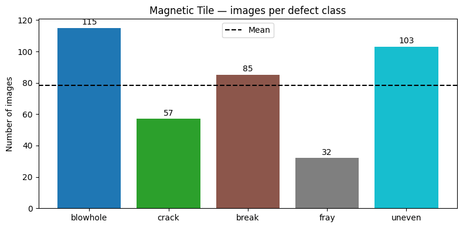
Class imbalance ratio (max/min): 3.6×
Discussion: Compare this imbalance with the DeepPCB dataset from this morning. Which classes do you predict will have the lowest mask IoU after training?
1.2 What do the defects look like?¶
Unlike this morning’s PCB defects, magnetic tile defects are subtle — low contrast against the background. This is a key reason why segmentation (exact pixel boundary) adds more value here than bounding boxes.
fig, axes = plt.subplots(NC, 3, figsize=(11, 3.5 * NC))
fig.suptitle("Magnetic Tile defects: image | mask | overlay", fontsize=13, y=1.01)
for row, (folder, name) in enumerate(zip(CLASS_FOLDERS, DEFECT_CLASSES)):
img_dir = DATASET_ROOT / folder / "Imgs"
# Images are .jpg; masks are .png with the same stem, in the same folder
jpg_imgs = sorted(img_dir.glob("*.jpg"))
if not jpg_imgs:
continue
img_path = random.choice(jpg_imgs)
mask_path = img_dir / (img_path.stem + ".png")
img = cv2.cvtColor(cv2.imread(str(img_path)), cv2.COLOR_BGR2RGB)
# Column 0: raw image
axes[row][0].imshow(img, cmap="gray")
axes[row][0].set_title(f"{name} — image", fontsize=9)
axes[row][0].axis("off")
if mask_path.exists():
mask = cv2.imread(str(mask_path), cv2.IMREAD_GRAYSCALE)
# Column 1: raw mask
axes[row][1].imshow(mask, cmap="gray")
axes[row][1].set_title(f"{name} — mask", fontsize=9)
axes[row][1].axis("off")
# Column 2: overlay
overlay = img.copy()
overlay[mask > 127] = (
overlay[mask > 127] * 0.4
+ np.array(COLORS[row][:3]) * 255 * 0.6
).astype(np.uint8)
axes[row][2].imshow(overlay)
axes[row][2].set_title(f"{name} — overlay", fontsize=9)
axes[row][2].axis("off")
else:
axes[row][1].axis("off")
axes[row][2].axis("off")
plt.tight_layout()
plt.show()
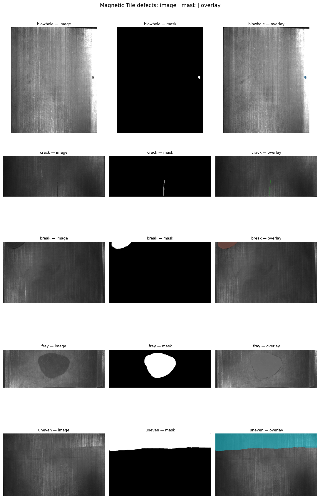
Key observation: The mask column shows exactly which pixels belong to the defect. This is what a bounding box cannot tell you — a box drawn around a thin crack includes mostly background pixels. The mask gives the exact defect boundary, which matters for severity scoring (area in mm²) and for distinguishing adjacent defects.
2. Data Preparation: PNG Mask → YOLO Polygon¶
This is the core pipeline of the afternoon session. YOLO-seg expects polygon annotations, not pixel masks. We convert each PNG mask to a list of normalised polygon coordinates.
The steps are:
Load PNG mask as grayscale
Find contours with
cv2.findContoursApproximate each contour to a polygon with
cv2.approxPolyDPNormalise coordinates to
[0, 1]Write YOLO format:
class_id x1 y1 x2 y2 ... xn yn
2.1 Understanding cv2.findContours and approxPolyDP¶
Let’s walk through the conversion on one example image before running the full loop.
# Pick one example from MT_Crack (usually has clean, clear contours)
example_folder = DATASET_ROOT / "MT_Crack"
example_imgs = sorted((example_folder / "Imgs").glob("*.jpg"))
example_img_path = example_imgs[0]
# Mask has the same stem as the image, stored as .png in the same Imgs/ folder
example_mask_path = example_folder / "Imgs" / (example_img_path.stem + ".png")
img = cv2.cvtColor(cv2.imread(str(example_img_path)), cv2.COLOR_BGR2RGB)
mask = cv2.imread(str(example_mask_path), cv2.IMREAD_GRAYSCALE)
h, w = mask.shape
# Step 1 — find contours
contours, _ = cv2.findContours(
mask, cv2.RETR_EXTERNAL, cv2.CHAIN_APPROX_TC89_KCOS
)
print(f"Image size: {w}×{h}")
print(f"Number of contours found: {len(contours)}")
print(f"Points in first contour (raw): {len(contours[0])}")
# Step 2 — approximate with different epsilon values
epsilons = [0.001, 0.005, 0.01]
approximated = []
for eps in epsilons:
arc = cv2.arcLength(contours[0], True)
approx = cv2.approxPolyDP(contours[0], eps * arc, True)
approximated.append(approx)
print(f" epsilon={eps:.3f}: {len(approx)} polygon points")
# Visualise
fig, axes = plt.subplots(1, 4, figsize=(14, 3.5))
axes[0].imshow(mask, cmap="gray")
axes[0].set_title("Binary mask")
axes[0].axis("off")
for ax, approx, eps in zip(axes[1:], approximated, epsilons):
vis = img.copy()
cv2.drawContours(vis, [approx], -1, (255, 80, 80), 2)
pts = approx.reshape(-1, 2)
for p in pts:
cv2.circle(vis, tuple(p), 3, (255, 200, 0), -1)
ax.imshow(vis)
ax.set_title(f"epsilon={eps}\n({len(approx)} pts)")
ax.axis("off")
plt.suptitle("Effect of epsilon on polygon approximation", fontsize=11)
plt.tight_layout()
plt.show()
Image size: 219×264
Number of contours found: 1
Points in first contour (raw): 72
epsilon=0.001: 62 polygon points
epsilon=0.005: 8 polygon points
epsilon=0.010: 6 polygon points
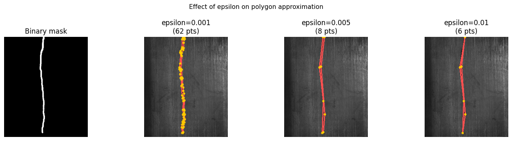
Discussion: A smaller epsilon preserves more detail but produces more polygon points (larger label files, slower training). A larger epsilon is more compact but may cut corners on thin defects like cracks. For magnetic tile defects, epsilon=0.001 is a good default — the defects are thin enough that coarser approximation loses meaningful shape information.
2.2 The YOLO polygon label format¶
YOLO-seg label files use one row per defect instance:
class_id x1 y1 x2 y2 x3 y3 ... xn yn
All coordinates are normalised to [0, 1] by dividing by image width and height respectively. Let’s see a concrete example.
# Show what the YOLO label line looks like for our example
EPSILON = 0.001
cls_id = DEFECT_CLASSES.index("crack")
arc = cv2.arcLength(contours[0], True)
approx = cv2.approxPolyDP(contours[0], EPSILON * arc, True).reshape(-1, 2)
coords = (approx / np.array([w, h])).flatten()
line = f"{cls_id} " + " ".join(f"{v:.6f}" for v in coords)
print(f"Class id : {cls_id} ({DEFECT_CLASSES[cls_id]})")
print(f"Image size: {w}×{h}")
print(f"Polygon points: {len(approx)}")
print()
print("YOLO label line (first 120 chars):")
print(line[:120] + " ...")
Class id : 1 (crack)
Image size: 219×264
Polygon points: 62
YOLO label line (first 120 chars):
1 0.479452 0.000000 0.461187 0.000000 0.461187 0.011364 0.452055 0.022727 0.452055 0.102273 0.447489 0.121212 0.433790 0 ...
2.3 Full conversion pipeline¶
Now we run the conversion for all classes, split into train/val, and write the YOLO directory structure.
# ── CONFIG ──────────────────────────────────────────────────────────────────
RUN_DATA_PREP = False # We have prepared the data for you but you can check the cells below to learn how it is prepared
VAL_FRACTION = 0.15
EPSILON = 0.001
MIN_AREA_PX = 20 # ignore contours smaller than this (noise)
# ────────────────────────────────────────────────────────────────────────────
def mask_to_yolo_polygons(mask_path: Path, class_id: int,
img_w: int, img_h: int,
epsilon: float = 0.001,
min_area: int = 20) -> list:
"""
Convert a binary PNG mask to a list of YOLO polygon label strings.
Returns one string per connected component (defect instance).
"""
mask = cv2.imread(str(mask_path), cv2.IMREAD_GRAYSCALE)
if mask is None:
return []
# Threshold to binary (mask values may not be exactly 0/255)
_, binary = cv2.threshold(mask, 127, 255, cv2.THRESH_BINARY)
contours, _ = cv2.findContours(
binary, cv2.RETR_EXTERNAL, cv2.CHAIN_APPROX_TC89_KCOS
)
lines = []
for cnt in contours:
if cv2.contourArea(cnt) < min_area:
continue
arc = cv2.arcLength(cnt, True)
approx = cv2.approxPolyDP(cnt, epsilon * arc, True).reshape(-1, 2)
if len(approx) < 3: # degenerate polygon
continue
coords = (approx / np.array([img_w, img_h])).flatten()
# Clamp to [0, 1] to handle any edge boundary artifacts
coords = np.clip(coords, 0.0, 1.0)
lines.append(f"{class_id} " + " ".join(f"{v:.6f}" for v in coords))
return lines
if RUN_DATA_PREP:
# Create output directory structure
for split in ["train", "val"]:
(OUTPUT_ROOT / split / "images").mkdir(parents=True, exist_ok=True)
(OUTPUT_ROOT / split / "labels").mkdir(parents=True, exist_ok=True)
total_train, total_val = 0, 0
class_counts = {name: {"train": 0, "val": 0} for name in DEFECT_CLASSES}
# ── defect classes ───────────────────────────────────────────────────
for cls_id, (folder, name) in enumerate(zip(CLASS_FOLDERS, DEFECT_CLASSES)):
img_dir = DATASET_ROOT / folder / "Imgs"
# Images are .jpg; masks are .png with the same stem in the same folder
imgs = sorted(img_dir.glob("*.jpg"))
random.shuffle(imgs)
n_val = max(1, int(len(imgs) * VAL_FRACTION))
val_set = set(p.stem for p in imgs[:n_val])
for img_path in imgs:
mask_path = img_dir / (img_path.stem + ".png")
if not mask_path.exists():
continue
img_cv = cv2.imread(str(img_path))
h, w = img_cv.shape[:2]
lines = mask_to_yolo_polygons(mask_path, cls_id, w, h,
EPSILON, MIN_AREA_PX)
if not lines: # mask had no valid contours
continue
split = "val" if img_path.stem in val_set else "train"
# Copy image
dest_img = OUTPUT_ROOT / split / "images" / img_path.name
shutil.copy2(img_path, dest_img)
# Write label
dest_lbl = OUTPUT_ROOT / split / "labels" / (img_path.stem + ".txt")
dest_lbl.write_text("\n".join(lines))
class_counts[name][split] += 1
if split == "train": total_train += 1
else: total_val += 1
# ── defect-free images (no label file → YOLO treats as background) ───
free_imgs = sorted(free_dir.glob("*.jpg")) + sorted(free_dir.glob("*.png"))
random.shuffle(free_imgs)
n_free_val = max(1, int(len(free_imgs) * VAL_FRACTION))
free_val = set(p.stem for p in free_imgs[:n_free_val])
for img_path in free_imgs:
split = "val" if img_path.stem in free_val else "train"
dest_img = OUTPUT_ROOT / split / "images" / img_path.name
shutil.copy2(img_path, dest_img)
# No label file written → YOLO treats image as background-only
total_train += (split == "train")
total_val += (split == "val")
print(f"Data preparation complete.")
print(f" Train: {total_train} images")
print(f" Val : {total_val} images")
print()
print("Per-class split:")
print(f" {'Class':<12} {'Train':>8} {'Val':>6}")
print(" " + "─" * 28)
for name in DEFECT_CLASSES:
print(f" {name:<12} {class_counts[name]['train']:>8} {class_counts[name]['val']:>6}")
else:
print("Skipping data preparation (RUN_DATA_PREP=False)")
print(f"Using existing data at: {OUTPUT_ROOT}")
Skipping data preparation (RUN_DATA_PREP=False)
Using existing data at: /projappl/project_465002387/DEEP_Inspection_Material_Science/YOLO_1001/Yolo_Segmentation/magnetic_tile_yolo
2.4 Verification — render a converted label back on the image¶
Before training, always verify the conversion is correct. If the polygon overlay looks wrong here, the model will train on bad labels.
def render_yolo_seg_label(img_path: Path, label_path: Path) -> np.ndarray:
"""Render YOLO-seg polygon labels on an image. Returns RGB array."""
img = cv2.cvtColor(cv2.imread(str(img_path)), cv2.COLOR_BGR2RGB)
h, w = img.shape[:2]
if not label_path.exists():
return img
for line in label_path.read_text().strip().splitlines():
parts = line.split()
cls_id = int(parts[0])
coords = np.array(parts[1:], dtype=float).reshape(-1, 2)
coords = (coords * [w, h]).astype(int)
color = tuple((np.array(COLORS[cls_id][:3]) * 255).astype(int).tolist())
cv2.polylines(img, [coords], isClosed=True, color=color, thickness=2)
# Semi-transparent fill
overlay = img.copy()
cv2.fillPoly(overlay, [coords], color)
img = cv2.addWeighted(img, 0.7, overlay, 0.3, 0)
# Class label
cv2.putText(img, DEFECT_CLASSES[cls_id],
tuple(coords[0]), cv2.FONT_HERSHEY_SIMPLEX,
0.5, color, 1, cv2.LINE_AA)
return img
# Show 6 random training images with their converted labels
train_imgs = list((OUTPUT_ROOT / "train" / "images").glob("*.jpg"))
samples = random.sample(train_imgs, min(6, len(train_imgs)))
fig, axes = plt.subplots(2, 3, figsize=(12, 7))
fig.suptitle("Converted labels — polygon overlay on training images", fontsize=12)
for ax, img_path in zip(axes.flatten(), samples):
lbl_path = OUTPUT_ROOT / "train" / "labels" / (img_path.stem + ".txt")
rendered = render_yolo_seg_label(img_path, lbl_path)
ax.imshow(rendered)
ax.set_title(img_path.stem[:20], fontsize=8)
ax.axis("off")
plt.tight_layout()
plt.show()
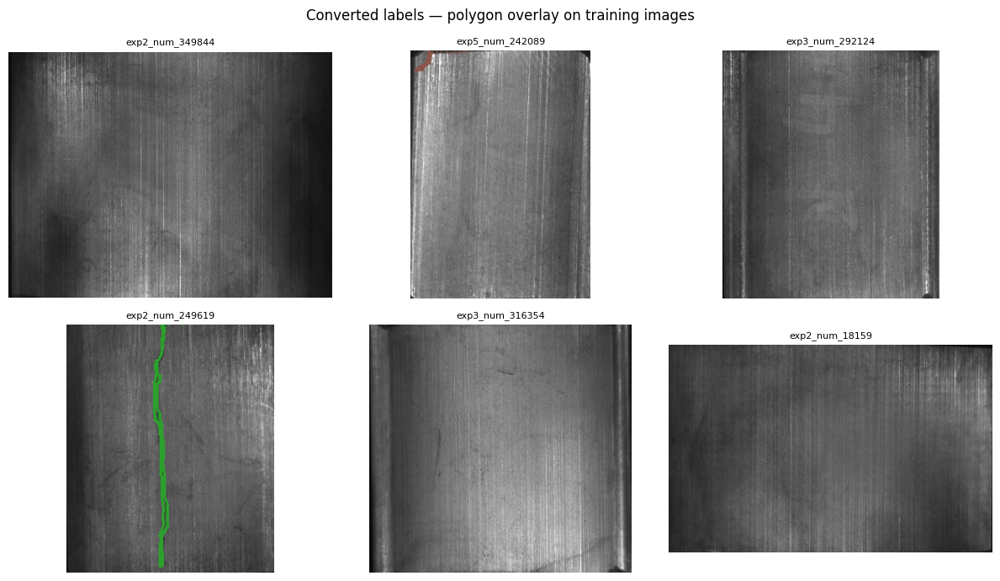
Verify the source of images¶
Note: One can see that some of the above images does not show any label, because they simply belong to the defect-free class. Run the following cell to verfiy where the image comes from
# Find which class folder this image actually came from
stem = "exp3_num_316354" # This code can be changed according to the displayed image above
for folder in CLASS_FOLDERS + [FREE_FOLDER]:
img_dir = DATASET_ROOT / folder / "Imgs"
jpg = img_dir / f"{stem}.jpg"
png = img_dir / f"{stem}.png"
print(f"{folder:15s} jpg={jpg.exists()} png={png.exists()}")
MT_Blowhole jpg=False png=False
MT_Crack jpg=False png=False
MT_Break jpg=False png=False
MT_Fray jpg=False png=False
MT_Uneven jpg=False png=False
MT_Free jpg=True png=True
# Check all 6 images from the verification plot
stems = [
"Fill in the image title here",
"Fill in the image title here",
"Fill in the image title here",
"Fill in the image title here",
"Fill in the image title here",
"Fill in the image title here",
]
print(f"{'Stem':<25} {'Class':>15} {'Has mask':>10}")
print("─" * 55)
for stem in stems:
found_folder = None
has_mask = False
for folder in CLASS_FOLDERS + [FREE_FOLDER]:
img_dir = DATASET_ROOT / folder / "Imgs"
if (img_dir / f"{stem}.jpg").exists():
found_folder = folder
has_mask = (img_dir / f"{stem}.png").exists()
break
print(f"{stem:<25} {str(found_folder):>15} {str(has_mask):>10}")
Stem Class Has mask
───────────────────────────────────────────────────────
exp4_num_286277 MT_Free True
exp3_num_258558 MT_Fray True
exp5_num_354439 MT_Free True
exp3_num_332719 MT_Free True
exp6_num_355732 MT_Free True
exp3_num_342176 MT_Crack True
2.5 Write data.yaml¶
cfg = {
"path" : str(OUTPUT_ROOT.resolve()),
"train": "train/images",
"val" : "val/images",
"nc" : NC,
"names": DEFECT_CLASSES,
}
with open(YAML_PATH, "w") as f:
yaml.dump(cfg, f, default_flow_style=False)
print("data.yaml written:")
print(YAML_PATH.read_text())
data.yaml written:
names:
- blowhole
- crack
- break
- fray
- uneven
nc: 5
path: /pfs/lustrep4/projappl/project_465002387/DEEP_Inspection_Material_Science/YOLO_1001/Yolo_Segmentation/magnetic_tile_yolo
train: train/images
val: val/images
3. Training¶
We fine-tune YOLO11n-seg starting from COCO pretrained weights.
The -seg suffix means the model has an additional mask head on top of the detection head — it predicts 32 prototype masks and a set of coefficients per detection to linearly combine them into the final instance mask.
While training runs, the key conceptual point to absorb: the segmentation head adds seg_loss on top of the detection box_loss and cls_loss. The model is jointly optimised to get boxes right and masks right — these two objectives sometimes pull in different directions, which is why box/mAP and seg/mAP can diverge.
YOLO_WEIGHTS = Path("/projappl/project_465002387/DEEP_Inspection_Material_Science/YOLO_1001/Yolo_Segmentation/yolo11n-seg.pt")
model = YOLO(str(YOLO_WEIGHTS))
results = model.train(
data = str(YAML_PATH),
epochs = 30,
imgsz = 640,
batch = 16,
device = DEVICE,
workers = 2,
patience = 10,
max_det = 50, # magnetic tiles rarely have >10 defects; cap saves NMS time
seed = SEED,
project = str(FLASH_DIR / "runs/segment"),
name = "magnetic_tile_yolo11n",
exist_ok = True,
)
#RUN_DIR = Path(results.save_dir)
print(f"\nTraining complete. Outputs saved to: {RUN_DIR}")
New https://pypi.org/project/ultralytics/8.4.164 available 😃 Update with 'pip install -U ultralytics'
Ultralytics 8.4.7 🚀 Python-3.12.3 torch-2.9.1+rocm6.4 CUDA:0 (AMD Instinct MI250X, 65520MiB)
engine/trainer: agnostic_nms=False, amp=True, angle=1.0, augment=False, auto_augment=randaugment, batch=16, bgr=0.0, box=7.5, cache=False, cfg=None, classes=None, close_mosaic=10, cls=0.5, compile=False, conf=None, copy_paste=0.0, copy_paste_mode=flip, cos_lr=False, cutmix=0.0, data=/projappl/project_465002387/DEEP_Inspection_Material_Science/YOLO_1001/Yolo_Segmentation/magnetic_tile_yolo/data.yaml, degrees=0.0, deterministic=True, device=0, dfl=1.5, dnn=False, dropout=0.0, dynamic=False, embed=None, epochs=30, erasing=0.4, exist_ok=True, fliplr=0.5, flipud=0.0, format=torchscript, fraction=1.0, freeze=None, half=False, hsv_h=0.015, hsv_s=0.7, hsv_v=0.4, imgsz=640, int8=False, iou=0.7, keras=False, kobj=1.0, line_width=None, lr0=0.01, lrf=0.01, mask_ratio=4, max_det=50, mixup=0.0, mode=train, model=/projappl/project_465002387/DEEP_Inspection_Material_Science/YOLO_1001/Yolo_Segmentation/yolo11n-seg.pt, momentum=0.937, mosaic=1.0, multi_scale=0.0, name=magnetic_tile_yolo11n, nbs=64, nms=False, opset=None, optimize=False, optimizer=auto, overlap_mask=True, patience=10, perspective=0.0, plots=True, pose=12.0, pretrained=True, profile=False, project=/flash/project_465002387/MS_YOLO/xieruiwe/runs/segment, rect=False, resume=False, retina_masks=False, rle=1.0, save=True, save_conf=False, save_crop=False, save_dir=/pfs/lustref1/flash/project_465002387/MS_YOLO/xieruiwe/runs/segment/magnetic_tile_yolo11n, save_frames=False, save_json=False, save_period=-1, save_txt=False, scale=0.5, seed=42, shear=0.0, show=False, show_boxes=True, show_conf=True, show_labels=True, simplify=True, single_cls=False, source=None, split=val, stream_buffer=False, task=segment, time=None, tracker=botsort.yaml, translate=0.1, val=True, verbose=True, vid_stride=1, visualize=False, warmup_bias_lr=0.1, warmup_epochs=3.0, warmup_momentum=0.8, weight_decay=0.0005, workers=2, workspace=None
Overriding model.yaml nc=80 with nc=5
from n params module arguments
0 -1 1 464 ultralytics.nn.modules.conv.Conv [3, 16, 3, 2]
1 -1 1 4672 ultralytics.nn.modules.conv.Conv [16, 32, 3, 2]
2 -1 1 6640 ultralytics.nn.modules.block.C3k2 [32, 64, 1, False, 0.25]
3 -1 1 36992 ultralytics.nn.modules.conv.Conv [64, 64, 3, 2]
4 -1 1 26080 ultralytics.nn.modules.block.C3k2 [64, 128, 1, False, 0.25]
5 -1 1 147712 ultralytics.nn.modules.conv.Conv [128, 128, 3, 2]
6 -1 1 87040 ultralytics.nn.modules.block.C3k2 [128, 128, 1, True]
7 -1 1 295424 ultralytics.nn.modules.conv.Conv [128, 256, 3, 2]
8 -1 1 346112 ultralytics.nn.modules.block.C3k2 [256, 256, 1, True]
9 -1 1 164608 ultralytics.nn.modules.block.SPPF [256, 256, 5]
10 -1 1 249728 ultralytics.nn.modules.block.C2PSA [256, 256, 1]
11 -1 1 0 torch.nn.modules.upsampling.Upsample [None, 2, 'nearest']
12 [-1, 6] 1 0 ultralytics.nn.modules.conv.Concat [1]
13 -1 1 111296 ultralytics.nn.modules.block.C3k2 [384, 128, 1, False]
14 -1 1 0 torch.nn.modules.upsampling.Upsample [None, 2, 'nearest']
15 [-1, 4] 1 0 ultralytics.nn.modules.conv.Concat [1]
16 -1 1 32096 ultralytics.nn.modules.block.C3k2 [256, 64, 1, False]
17 -1 1 36992 ultralytics.nn.modules.conv.Conv [64, 64, 3, 2]
18 [-1, 13] 1 0 ultralytics.nn.modules.conv.Concat [1]
19 -1 1 86720 ultralytics.nn.modules.block.C3k2 [192, 128, 1, False]
20 -1 1 147712 ultralytics.nn.modules.conv.Conv [128, 128, 3, 2]
21 [-1, 10] 1 0 ultralytics.nn.modules.conv.Concat [1]
22 -1 1 378880 ultralytics.nn.modules.block.C3k2 [384, 256, 1, True]
23 [16, 19, 22] 1 684415 ultralytics.nn.modules.head.Segment [5, 32, 64, 16, None, [64, 128, 256]]
YOLO11n-seg summary: 204 layers, 2,843,583 parameters, 2,843,567 gradients, 9.7 GFLOPs
Transferred 510/561 items from pretrained weights
Freezing layer 'model.23.dfl.conv.weight'
AMP: running Automatic Mixed Precision (AMP) checks...
AMP: checks passed ✅
train: Fast image access ✅ (ping: 0.5±0.1 ms, read: 2.3±3.9 MB/s, size: 16.8 KB)
train: Scanning /pfs/lustrep4/projappl/project_465002387/DEEP_Inspection_Material_Science/YOLO_1001/Yolo_Segmentation/magnetic_tile_yolo/train/labels.cache... 323 images, 1366 backgrounds, 0 corrupt: 100% ━━━━━━━━━━━━ 1689/1689 393.6Mit/s 0.0s
val: Fast image access ✅ (ping: 1.1±1.4 ms, read: 1.8±0.9 MB/s, size: 27.4 KB)
val: Scanning /pfs/lustrep4/projappl/project_465002387/DEEP_Inspection_Material_Science/YOLO_1001/Yolo_Segmentation/magnetic_tile_yolo/val/labels.cache... 56 images, 538 backgrounds, 0 corrupt: 100% ━━━━━━━━━━━━ 594/594 73.3Mit/s 0.0s
Plotting labels to /pfs/lustref1/flash/project_465002387/MS_YOLO/xieruiwe/runs/segment/magnetic_tile_yolo11n/labels.jpg...
optimizer: 'optimizer=auto' found, ignoring 'lr0=0.01' and 'momentum=0.937' and determining best 'optimizer', 'lr0' and 'momentum' automatically...
optimizer: MuSGD(lr=0.001111, momentum=0.9) with parameter groups 90 weight(decay=0.0), 101 weight(decay=0.0005), 100 bias(decay=0.0)
Image sizes 640 train, 640 val
Using 2 dataloader workers
Logging results to /pfs/lustref1/flash/project_465002387/MS_YOLO/xieruiwe/runs/segment/magnetic_tile_yolo11n
Starting training for 30 epochs...
Epoch GPU_mem box_loss seg_loss cls_loss dfl_loss sem_loss Instances Size
1/30 0.455G 1.82 3.961 11.48 1.545 0 0 640: 100% ━━━━━━━━━━━━ 106/106 1.1it/s 1:330.4ss
Class Images Instances Box(P R mAP50 mAP50-95) Mask(P R mAP50 mAP50-95): 100% ━━━━━━━━━━━━ 19/19 3.3s/it 1:021.1ss
all 594 69 0.000627 0.352 0.0112 0.00627 0.000507 0.266 0.0103 0.00475
Epoch GPU_mem box_loss seg_loss cls_loss dfl_loss sem_loss Instances Size
2/30 1.41G 1.567 2.84 10.17 1.347 0 3 640: 100% ━━━━━━━━━━━━ 106/106 4.2it/s 25.3s0.3s
Class Images Instances Box(P R mAP50 mAP50-95) Mask(P R mAP50 mAP50-95): 100% ━━━━━━━━━━━━ 19/19 9.6it/s 2.0s0.1s
all 594 69 0.814 0.187 0.194 0.111 0.807 0.176 0.171 0.0885
Epoch GPU_mem box_loss seg_loss cls_loss dfl_loss sem_loss Instances Size
3/30 2.81G 1.459 2.413 8.207 1.281 0 2 640: 100% ━━━━━━━━━━━━ 106/106 4.5it/s 23.7s0.2s
Class Images Instances Box(P R mAP50 mAP50-95) Mask(P R mAP50 mAP50-95): 100% ━━━━━━━━━━━━ 19/19 10.0it/s 1.9s.2s
all 594 69 0.693 0.294 0.42 0.249 0.654 0.259 0.354 0.162
Epoch GPU_mem box_loss seg_loss cls_loss dfl_loss sem_loss Instances Size
4/30 2.83G 1.344 2.128 7.218 1.27 0 4 640: 100% ━━━━━━━━━━━━ 106/106 4.6it/s 23.0s0.2s
Class Images Instances Box(P R mAP50 mAP50-95) Mask(P R mAP50 mAP50-95): 100% ━━━━━━━━━━━━ 19/19 9.9it/s 1.9s<0.1s
all 594 69 0.564 0.433 0.469 0.259 0.558 0.351 0.415 0.203
Epoch GPU_mem box_loss seg_loss cls_loss dfl_loss sem_loss Instances Size
5/30 2.83G 1.309 2.017 7.438 1.172 0 4 640: 100% ━━━━━━━━━━━━ 106/106 4.6it/s 23.0s0.2s
Class Images Instances Box(P R mAP50 mAP50-95) Mask(P R mAP50 mAP50-95): 100% ━━━━━━━━━━━━ 19/19 9.8it/s 1.9s0.2s
all 594 69 0.463 0.484 0.499 0.274 0.458 0.476 0.486 0.259
Epoch GPU_mem box_loss seg_loss cls_loss dfl_loss sem_loss Instances Size
6/30 2.83G 1.332 1.98 5.336 1.182 0 10 640: 100% ━━━━━━━━━━━━ 106/106 4.6it/s 23.2s0.2s
Class Images Instances Box(P R mAP50 mAP50-95) Mask(P R mAP50 mAP50-95): 100% ━━━━━━━━━━━━ 19/19 9.9it/s 1.9s<0.1s
all 594 69 0.592 0.505 0.533 0.302 0.533 0.438 0.47 0.211
Epoch GPU_mem box_loss seg_loss cls_loss dfl_loss sem_loss Instances Size
7/30 2.84G 1.264 1.739 5.681 1.163 0 3 640: 100% ━━━━━━━━━━━━ 106/106 4.7it/s 22.8s0.2s
Class Images Instances Box(P R mAP50 mAP50-95) Mask(P R mAP50 mAP50-95): 100% ━━━━━━━━━━━━ 19/19 9.8it/s 1.9s<0.1s
all 594 69 0.495 0.586 0.532 0.306 0.467 0.53 0.485 0.248
Epoch GPU_mem box_loss seg_loss cls_loss dfl_loss sem_loss Instances Size
8/30 2.84G 1.267 1.994 4.445 1.165 0 8 640: 100% ━━━━━━━━━━━━ 106/106 4.6it/s 23.0s0.2s
Class Images Instances Box(P R mAP50 mAP50-95) Mask(P R mAP50 mAP50-95): 100% ━━━━━━━━━━━━ 19/19 10.4it/s 1.8s0.2s
all 594 69 0.597 0.579 0.643 0.409 0.517 0.55 0.585 0.327
Epoch GPU_mem box_loss seg_loss cls_loss dfl_loss sem_loss Instances Size
9/30 2.84G 1.27 1.819 3.714 1.16 0 5 640: 100% ━━━━━━━━━━━━ 106/106 4.6it/s 23.0s0.2s
Class Images Instances Box(P R mAP50 mAP50-95) Mask(P R mAP50 mAP50-95): 100% ━━━━━━━━━━━━ 19/19 10.6it/s 1.8s0.1s
all 594 69 0.621 0.603 0.664 0.415 0.584 0.602 0.631 0.347
Epoch GPU_mem box_loss seg_loss cls_loss dfl_loss sem_loss Instances Size
10/30 2.86G 1.197 1.752 3.434 1.109 0 6 640: 100% ━━━━━━━━━━━━ 106/106 4.6it/s 23.0s0.2s
Class Images Instances Box(P R mAP50 mAP50-95) Mask(P R mAP50 mAP50-95): 100% ━━━━━━━━━━━━ 19/19 10.7it/s 1.8s0.1s
all 594 69 0.749 0.584 0.698 0.404 0.763 0.563 0.668 0.31
Epoch GPU_mem box_loss seg_loss cls_loss dfl_loss sem_loss Instances Size
11/30 2.86G 1.225 1.739 3.134 1.143 0 5 640: 100% ━━━━━━━━━━━━ 106/106 4.6it/s 23.0s0.2s
Class Images Instances Box(P R mAP50 mAP50-95) Mask(P R mAP50 mAP50-95): 100% ━━━━━━━━━━━━ 19/19 11.1it/s 1.7s0.2s
all 594 69 0.671 0.691 0.749 0.428 0.694 0.615 0.674 0.384
Epoch GPU_mem box_loss seg_loss cls_loss dfl_loss sem_loss Instances Size
12/30 2.86G 1.208 1.724 2.822 1.124 0 4 640: 100% ━━━━━━━━━━━━ 106/106 4.6it/s 23.1s0.2s
Class Images Instances Box(P R mAP50 mAP50-95) Mask(P R mAP50 mAP50-95): 100% ━━━━━━━━━━━━ 19/19 11.2it/s 1.7s0.1s
all 594 69 0.875 0.683 0.785 0.456 0.851 0.662 0.719 0.38
Epoch GPU_mem box_loss seg_loss cls_loss dfl_loss sem_loss Instances Size
13/30 2.86G 1.179 1.768 3.798 1.097 0 5 640: 100% ━━━━━━━━━━━━ 106/106 4.6it/s 23.0s0.2s
Class Images Instances Box(P R mAP50 mAP50-95) Mask(P R mAP50 mAP50-95): 100% ━━━━━━━━━━━━ 19/19 11.1it/s 1.7s0.1s
all 594 69 0.713 0.697 0.74 0.466 0.626 0.592 0.622 0.362
Epoch GPU_mem box_loss seg_loss cls_loss dfl_loss sem_loss Instances Size
14/30 2.86G 1.168 1.684 2.797 1.119 0 1 640: 100% ━━━━━━━━━━━━ 106/106 4.6it/s 23.3s0.2s
Class Images Instances Box(P R mAP50 mAP50-95) Mask(P R mAP50 mAP50-95): 100% ━━━━━━━━━━━━ 19/19 11.2it/s 1.7s0.1s
all 594 69 0.635 0.744 0.727 0.452 0.594 0.697 0.665 0.366
Epoch GPU_mem box_loss seg_loss cls_loss dfl_loss sem_loss Instances Size
15/30 2.86G 1.146 1.722 2.545 1.072 0 2 640: 100% ━━━━━━━━━━━━ 106/106 4.6it/s 23.1s0.2s
Class Images Instances Box(P R mAP50 mAP50-95) Mask(P R mAP50 mAP50-95): 100% ━━━━━━━━━━━━ 19/19 10.9it/s 1.8s0.1s
all 594 69 0.764 0.763 0.795 0.468 0.714 0.701 0.681 0.369
Epoch GPU_mem box_loss seg_loss cls_loss dfl_loss sem_loss Instances Size
16/30 2.86G 1.184 1.659 2.323 1.134 0 5 640: 100% ━━━━━━━━━━━━ 106/106 4.5it/s 23.3s0.2s
Class Images Instances Box(P R mAP50 mAP50-95) Mask(P R mAP50 mAP50-95): 100% ━━━━━━━━━━━━ 19/19 11.7it/s 1.6s0.1s
all 594 69 0.718 0.75 0.806 0.482 0.734 0.664 0.738 0.405
Epoch GPU_mem box_loss seg_loss cls_loss dfl_loss sem_loss Instances Size
17/30 2.86G 1.118 1.696 2.12 1.069 0 3 640: 100% ━━━━━━━━━━━━ 106/106 4.6it/s 23.0s0.2s
Class Images Instances Box(P R mAP50 mAP50-95) Mask(P R mAP50 mAP50-95): 100% ━━━━━━━━━━━━ 19/19 12.1it/s 1.6s0.1s
all 594 69 0.883 0.713 0.847 0.5 0.839 0.659 0.772 0.409
Epoch GPU_mem box_loss seg_loss cls_loss dfl_loss sem_loss Instances Size
18/30 2.86G 1.103 1.602 2.013 1.083 0 6 640: 100% ━━━━━━━━━━━━ 106/106 4.6it/s 23.1s0.2s
Class Images Instances Box(P R mAP50 mAP50-95) Mask(P R mAP50 mAP50-95): 100% ━━━━━━━━━━━━ 19/19 11.6it/s 1.6s0.1s
all 594 69 0.662 0.815 0.823 0.492 0.69 0.681 0.72 0.384
Epoch GPU_mem box_loss seg_loss cls_loss dfl_loss sem_loss Instances Size
19/30 2.86G 1.102 1.571 1.948 1.081 0 5 640: 100% ━━━━━━━━━━━━ 106/106 4.6it/s 23.1s0.2s
Class Images Instances Box(P R mAP50 mAP50-95) Mask(P R mAP50 mAP50-95): 100% ━━━━━━━━━━━━ 19/19 11.4it/s 1.7s0.1s
all 594 69 0.848 0.785 0.851 0.512 0.734 0.746 0.745 0.394
Epoch GPU_mem box_loss seg_loss cls_loss dfl_loss sem_loss Instances Size
20/30 2.86G 1.033 1.55 2.07 1.059 0 3 640: 100% ━━━━━━━━━━━━ 106/106 4.6it/s 23.2s0.2s
Class Images Instances Box(P R mAP50 mAP50-95) Mask(P R mAP50 mAP50-95): 100% ━━━━━━━━━━━━ 19/19 11.5it/s 1.6s0.1s
all 594 69 0.85 0.771 0.846 0.547 0.797 0.767 0.787 0.423
Closing dataloader mosaic
Epoch GPU_mem box_loss seg_loss cls_loss dfl_loss sem_loss Instances Size
21/30 2.89G 1.023 1.433 4.792 0.9896 0 0 640: 100% ━━━━━━━━━━━━ 106/106 3.8it/s 28.2s0.2s
Class Images Instances Box(P R mAP50 mAP50-95) Mask(P R mAP50 mAP50-95): 100% ━━━━━━━━━━━━ 19/19 12.3it/s 1.5s0.1s
all 594 69 0.747 0.834 0.866 0.526 0.691 0.743 0.745 0.405
Epoch GPU_mem box_loss seg_loss cls_loss dfl_loss sem_loss Instances Size
22/30 2.89G 1.135 1.509 3.202 1.056 0 1 640: 100% ━━━━━━━━━━━━ 106/106 4.7it/s 22.5s0.2s
Class Images Instances Box(P R mAP50 mAP50-95) Mask(P R mAP50 mAP50-95): 100% ━━━━━━━━━━━━ 19/19 12.7it/s 1.5s0.1s
all 594 69 0.835 0.721 0.86 0.503 0.643 0.738 0.726 0.4
Epoch GPU_mem box_loss seg_loss cls_loss dfl_loss sem_loss Instances Size
23/30 2.89G 1.083 1.468 3.052 1.008 0 0 640: 100% ━━━━━━━━━━━━ 106/106 4.8it/s 22.2s0.2s
Class Images Instances Box(P R mAP50 mAP50-95) Mask(P R mAP50 mAP50-95): 100% ━━━━━━━━━━━━ 19/19 14.0it/s 1.4s0.1s
all 594 69 0.815 0.824 0.861 0.542 0.741 0.759 0.735 0.403
Epoch GPU_mem box_loss seg_loss cls_loss dfl_loss sem_loss Instances Size
24/30 2.89G 1.041 1.385 3.007 1.023 0 1 640: 100% ━━━━━━━━━━━━ 106/106 4.7it/s 22.4s0.2s
Class Images Instances Box(P R mAP50 mAP50-95) Mask(P R mAP50 mAP50-95): 100% ━━━━━━━━━━━━ 19/19 14.3it/s 1.3s0.1s
all 594 69 0.801 0.726 0.829 0.533 0.715 0.706 0.746 0.397
Epoch GPU_mem box_loss seg_loss cls_loss dfl_loss sem_loss Instances Size
25/30 2.9G 1.051 1.541 2.831 1.029 0 1 640: 100% ━━━━━━━━━━━━ 106/106 4.8it/s 22.3s0.2s
Class Images Instances Box(P R mAP50 mAP50-95) Mask(P R mAP50 mAP50-95): 100% ━━━━━━━━━━━━ 19/19 14.0it/s 1.4s0.1s
all 594 69 0.805 0.834 0.871 0.553 0.775 0.803 0.818 0.431
Epoch GPU_mem box_loss seg_loss cls_loss dfl_loss sem_loss Instances Size
26/30 2.91G 1.05 1.418 2.758 1.017 0 1 640: 100% ━━━━━━━━━━━━ 106/106 4.7it/s 22.4s0.2s
Class Images Instances Box(P R mAP50 mAP50-95) Mask(P R mAP50 mAP50-95): 100% ━━━━━━━━━━━━ 19/19 14.1it/s 1.3s0.1s
all 594 69 0.791 0.87 0.864 0.557 0.742 0.807 0.767 0.408
Epoch GPU_mem box_loss seg_loss cls_loss dfl_loss sem_loss Instances Size
27/30 2.91G 1.055 1.505 2.744 1.005 0 2 640: 100% ━━━━━━━━━━━━ 106/106 4.8it/s 22.3s0.2s
Class Images Instances Box(P R mAP50 mAP50-95) Mask(P R mAP50 mAP50-95): 100% ━━━━━━━━━━━━ 19/19 14.1it/s 1.4s0.1s
all 594 69 0.871 0.845 0.884 0.559 0.765 0.768 0.733 0.421
Epoch GPU_mem box_loss seg_loss cls_loss dfl_loss sem_loss Instances Size
28/30 2.91G 0.9817 1.433 2.458 0.9941 0 1 640: 100% ━━━━━━━━━━━━ 106/106 4.7it/s 22.4s0.2s
Class Images Instances Box(P R mAP50 mAP50-95) Mask(P R mAP50 mAP50-95): 100% ━━━━━━━━━━━━ 19/19 13.2it/s 1.4s0.1s
all 594 69 0.836 0.85 0.882 0.565 0.761 0.797 0.784 0.435
Epoch GPU_mem box_loss seg_loss cls_loss dfl_loss sem_loss Instances Size
29/30 2.91G 0.9559 1.376 2.43 1.019 0 1 640: 100% ━━━━━━━━━━━━ 106/106 4.7it/s 22.4s0.2s
Class Images Instances Box(P R mAP50 mAP50-95) Mask(P R mAP50 mAP50-95): 100% ━━━━━━━━━━━━ 19/19 14.7it/s 1.3s0.1s
all 594 69 0.807 0.859 0.892 0.57 0.737 0.786 0.782 0.435
Epoch GPU_mem box_loss seg_loss cls_loss dfl_loss sem_loss Instances Size
30/30 2.91G 1.029 1.437 2.31 1.02 0 1 640: 100% ━━━━━━━━━━━━ 106/106 4.7it/s 22.5s0.2s
Class Images Instances Box(P R mAP50 mAP50-95) Mask(P R mAP50 mAP50-95): 100% ━━━━━━━━━━━━ 19/19 14.7it/s 1.3s0.1s
all 594 69 0.829 0.844 0.892 0.577 0.766 0.787 0.794 0.437
30 epochs completed in 0.246 hours.
Optimizer stripped from /pfs/lustref1/flash/project_465002387/MS_YOLO/xieruiwe/runs/segment/magnetic_tile_yolo11n/weights/last.pt, 6.0MB
Optimizer stripped from /pfs/lustref1/flash/project_465002387/MS_YOLO/xieruiwe/runs/segment/magnetic_tile_yolo11n/weights/best.pt, 6.0MB
Validating /pfs/lustref1/flash/project_465002387/MS_YOLO/xieruiwe/runs/segment/magnetic_tile_yolo11n/weights/best.pt...
Ultralytics 8.4.7 🚀 Python-3.12.3 torch-2.9.1+rocm6.4 CUDA:0 (AMD Instinct MI250X, 65520MiB)
YOLO11n-seg summary (fused): 114 layers, 2,835,543 parameters, 0 gradients, 9.6 GFLOPs
Class Images Instances Box(P R mAP50 mAP50-95) Mask(P R mAP50 mAP50-95): 100% ━━━━━━━━━━━━ 19/19 10.1it/s 1.9s0.1s
all 594 69 0.83 0.844 0.892 0.572 0.767 0.787 0.795 0.433
blowhole 17 18 0.805 0.944 0.953 0.542 0.757 0.889 0.811 0.333
crack 8 11 0.885 0.818 0.937 0.567 0.674 0.636 0.698 0.168
break 12 21 0.844 0.774 0.903 0.585 0.793 0.728 0.798 0.391
fray 4 4 0.702 0.75 0.747 0.511 0.7 0.75 0.747 0.573
uneven 15 15 0.914 0.933 0.921 0.658 0.913 0.933 0.921 0.7
Speed: 0.1ms preprocess, 0.8ms inference, 0.0ms loss, 0.5ms postprocess per image
Results saved to /pfs/lustref1/flash/project_465002387/MS_YOLO/xieruiwe/runs/segment/magnetic_tile_yolo11n
Training complete. Outputs saved to: /flash/project_465002387/MS_YOLO/xieruiwe/runs/segment/magnetic_tile_yolo11n
3.1 Training curves¶
import pandas as pd
df = pd.read_csv(RUN_DIR / "results.csv")
df.columns = df.columns.str.strip()
fig, axes = plt.subplots(1, 3, figsize=(15, 4))
# ── losses ──────────────────────────────────────────────────────────────────
loss_cols = {
"train/box_loss" : ("box loss", "steelblue"),
"train/seg_loss" : ("seg loss", "coral"),
"train/cls_loss" : ("cls loss", "green"),
"train/dfl_loss" : ("dfl loss", "purple"),
}
for col, (label, color) in loss_cols.items():
if col in df.columns:
axes[0].plot(df["epoch"], df[col], label=label, color=color)
axes[0].set_title("Training losses")
axes[0].set_xlabel("Epoch")
axes[0].legend(fontsize=8)
# ── box mAP vs seg mAP ──────────────────────────────────────────────────────
map_cols = {
"metrics/mAP50(B)" : ("box mAP@0.50", "steelblue"),
"metrics/mAP50(M)" : ("mask mAP@0.50", "coral"),
"metrics/mAP50-95(B)": ("box mAP@0.50:0.95", "steelblue"),
"metrics/mAP50-95(M)": ("mask mAP@0.50:0.95","coral"),
}
styles = ["-", "-", "--", "--"]
for (col, (label, color)), ls in zip(map_cols.items(), styles):
if col in df.columns:
axes[1].plot(df["epoch"], df[col], label=label, color=color,
linestyle=ls)
axes[1].set_title("Validation mAP — box vs mask")
axes[1].set_xlabel("Epoch")
axes[1].legend(fontsize=7)
# ── precision / recall ──────────────────────────────────────────────────────
for col, label, color in [
("metrics/precision(B)", "Precision (box)", "steelblue"),
("metrics/recall(B)", "Recall (box)", "coral"),
("metrics/precision(M)", "Precision (mask)", "steelblue"),
("metrics/recall(M)", "Recall (mask)", "coral"),
]:
ls = "-" if "(B)" in col else "--"
if col in df.columns:
axes[2].plot(df["epoch"], df[col], label=label, color=color,
linestyle=ls)
axes[2].set_title("Precision / Recall — box vs mask")
axes[2].set_xlabel("Epoch")
axes[2].legend(fontsize=7)
plt.tight_layout()
plt.show()
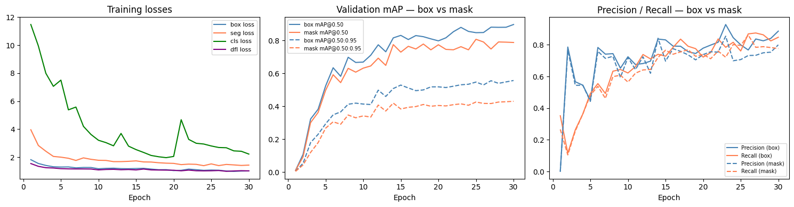
Discussion: Is mask mAP@0.50 higher or lower than box mAP@0.50? For magnetic tile defects, the mask IoU threshold is harder to satisfy than box IoU — a box that roughly contains a thin crack scores IoU 0.50 easily, but a mask must match the crack pixel-by-pixel to pass the same threshold.
4. Evaluation¶
4.1 Per-class box mAP and mask mAP¶
best_weights = RUN_DIR / "weights" / "best.pt"
model_eval = YOLO(str(best_weights))
val_results = model_eval.val(
data = str(YAML_PATH),
split = "val",
device = DEVICE,
verbose = False,
)
box_ap50 = val_results.box.ap50 # per-class box AP@50 (shape: NC,)
mask_ap50 = val_results.seg.ap50 # per-class mask AP@50
# Overall metrics
print(f"Box mAP@0.50 : {val_results.box.map50:.4f}")
print(f"Box mAP@0.50:0.95 : {val_results.box.map:.4f}")
print(f"Mask mAP@0.50 : {val_results.seg.map50:.4f}")
print(f"Mask mAP@0.50:0.95 : {val_results.seg.map:.4f}")
print()
print(f"{'Class':<12} {'Box AP@50':>12} {'Mask AP@50':>12}")
print("─" * 38)
for name, b, m in zip(DEFECT_CLASSES,
val_results.box.ap50,
val_results.seg.ap50):
print(f"{name:<12} {b:>12.4f} {m:>12.4f}")
Ultralytics 8.4.7 🚀 Python-3.12.3 torch-2.9.1+rocm6.4 CUDA:0 (AMD Instinct MI250X, 65520MiB)
YOLO11n-seg summary (fused): 114 layers, 2,835,543 parameters, 0 gradients, 9.6 GFLOPs
val: Fast image access ✅ (ping: 0.2±0.0 ms, read: 92.0±64.2 MB/s, size: 36.3 KB)
val: Scanning /pfs/lustrep4/projappl/project_465002387/DEEP_Inspection_Material_Science/YOLO_1001/Yolo_Segmentation/magnetic_tile_yolo/val/labels.cache... 56 images, 538 backgrounds, 0 corrupt: 100% ━━━━━━━━━━━━ 594/594 249.1Mit/s 0.0s
Class Images Instances Box(P R mAP50 mAP50-95) Mask(P R mAP50 mAP50-95): 100% ━━━━━━━━━━━━ 38/38 18.2it/s 2.1s0.1s
all 594 69 0.848 0.828 0.889 0.558 0.751 0.78 0.779 0.428
Speed: 0.7ms preprocess, 1.2ms inference, 0.0ms loss, 0.3ms postprocess per image
Results saved to /pfs/lustrep4/users/xieruiwe/YOLO_1001_test/runs/segment/val3
Box mAP@0.50 : 0.8886
Box mAP@0.50:0.95 : 0.5583
Mask mAP@0.50 : 0.7787
Mask mAP@0.50:0.95 : 0.4282
Class Box AP@50 Mask AP@50
──────────────────────────────────────
blowhole 0.9479 0.8175
crack 0.9371 0.6985
break 0.9029 0.7227
fray 0.7468 0.7468
uneven 0.9080 0.9080
# Side-by-side bar chart: box AP vs mask AP per class
x = np.arange(NC)
width = 0.35
fig, ax = plt.subplots(figsize=(9, 4))
b1 = ax.bar(x - width/2, val_results.box.ap50, width,
label="Box AP@0.50", color="steelblue")
b2 = ax.bar(x + width/2, val_results.seg.ap50, width,
label="Mask AP@0.50", color="coral")
ax.set_xticks(x)
ax.set_xticklabels(DEFECT_CLASSES, fontsize=11)
ax.set_ylim(0, 1.1)
ax.set_ylabel("AP@0.50")
ax.set_title("Per-class AP: bounding box vs instance mask")
ax.legend()
ax.bar_label(b1, fmt="%.2f", padding=2, fontsize=8)
ax.bar_label(b2, fmt="%.2f", padding=2, fontsize=8)
plt.tight_layout()
plt.show()
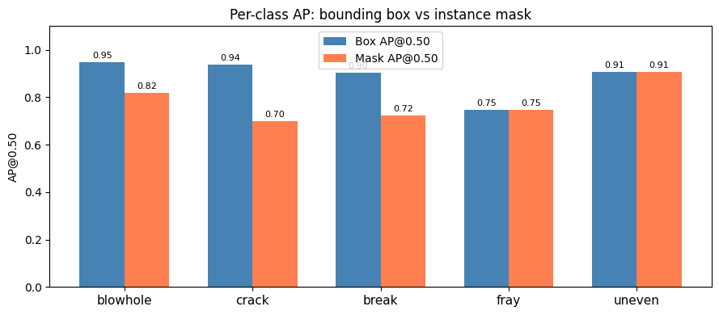
Discussion: For which classes is the gap between box AP and mask AP largest? A large gap means the model finds the defect (good box) but struggles to draw its precise boundary (poor mask). This is most pronounced for defects with irregular or thin shapes.
4.2 Qualitative results — GT mask vs predicted mask¶
CONF_THRESHOLD = 0.25
#val_imgs = list((OUTPUT_ROOT / "val" / "images").glob("*.jpg"))
#samples = random.sample(val_imgs, min(6, len(val_imgs)))
# Only sample images that have a corresponding label file
val_label_dir = OUTPUT_ROOT / "val" / "labels"
val_imgs_with_labels = [
OUTPUT_ROOT / "val" / "images" / (lf.stem + ".jpg")
for lf in val_label_dir.glob("*.txt")
if (OUTPUT_ROOT / "val" / "images" / (lf.stem + ".jpg")).exists()
]
samples = random.sample(val_imgs_with_labels, min(6, len(val_imgs_with_labels)))
mask_ann = sv.MaskAnnotator(opacity=0.5)
box_ann = sv.BoxAnnotator(thickness=1)
label_ann = sv.LabelAnnotator(text_scale=0.35, text_padding=2)
fig, axes = plt.subplots(len(samples), 2,
figsize=(11, 3.5 * len(samples)))
fig.suptitle(
f"Left: Ground Truth polygon Right: Predicted mask (conf ≥ {CONF_THRESHOLD})",
fontsize=11)
for row, img_path in enumerate(samples):
img_bgr = cv2.imread(str(img_path))
img_rgb = cv2.cvtColor(img_bgr, cv2.COLOR_BGR2RGB)
# ── ground truth (polygon rendered back) ────────────────────────────
lbl_path = OUTPUT_ROOT / "val" / "labels" / (img_path.stem + ".txt")
gt_img = render_yolo_seg_label(img_path, lbl_path)
# ── prediction ──────────────────────────────────────────────────────
pred = model_eval.predict(str(img_path), conf=CONF_THRESHOLD, max_det = 50,
device=DEVICE, verbose=False)[0]
pred_img = img_rgb.copy()
if len(pred.boxes) and pred.masks is not None:
det = sv.Detections.from_ultralytics(pred)
lbls = [f"{DEFECT_CLASSES[c]} {s:.2f}"
for c, s in zip(det.class_id, det.confidence)]
pred_img = mask_ann.annotate(pred_img.copy(), det)
pred_img = box_ann.annotate(pred_img, det)
pred_img = label_ann.annotate(pred_img, det, lbls)
axes[row][0].imshow(gt_img); axes[row][0].axis("off")
axes[row][1].imshow(pred_img); axes[row][1].axis("off")
axes[row][0].set_title(img_path.name[:25], fontsize=8)
plt.tight_layout()
plt.show()
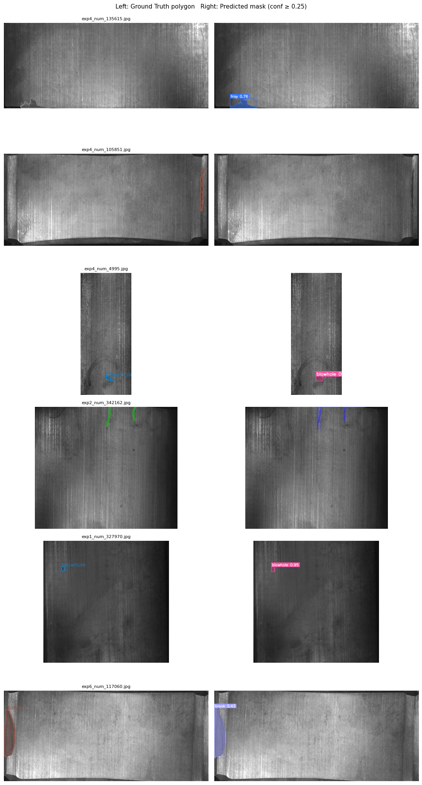
4.3 The class imbalance effect revisited¶
We predicted in Section 1.1 that rarer classes would perform worse. Let’s check that explicitly.
fig, ax = plt.subplots(figsize=(7, 5))
class_img_counts = [counts[n] for n in DEFECT_CLASSES]
mask_aps = list(val_results.seg.ap50)
scatter = ax.scatter(class_img_counts, mask_aps,
c=range(NC), cmap="tab10", s=120, zorder=3)
for i, name in enumerate(DEFECT_CLASSES):
ax.annotate(name, (class_img_counts[i], mask_aps[i]),
textcoords="offset points", xytext=(8, 0), fontsize=9)
ax.set_xlabel("Number of training images")
ax.set_ylabel("Mask AP@0.50")
ax.set_title("Does more data → better mask AP?")
ax.grid(True, alpha=0.3)
plt.tight_layout()
plt.show()
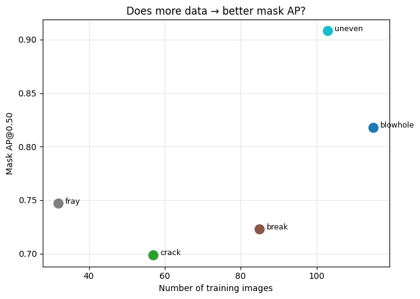
Discussion: Is there a clear correlation between training image count and mask AP? If not, what else might explain the per-class performance differences? (Consider: defect complexity, visual contrast, defect size, within-class variation.)
4.4 Confidence threshold exploration¶
# Pick the weakest class and show effect of lowering the threshold
worst_cls_id = int(np.argmin(list(val_results.seg.ap50)))
worst_cls_name = DEFECT_CLASSES[worst_cls_id]
print(f"Weakest class: '{worst_cls_name}'")
# Find ALL val images containing this class, then pick the one
# with the largest defect area (most visually informative)
val_lbl_dir = OUTPUT_ROOT / "val" / "labels"
val_img_dir = OUTPUT_ROOT / "val" / "images"
candidates = []
for lf in val_lbl_dir.glob("*.txt"):
total_area = 0
has_class = False
for line in lf.read_text().strip().splitlines():
if not line:
continue
parts = line.split()
if int(parts[0]) == worst_cls_id:
has_class = True
# approximate polygon area as bounding box of its points
coords = np.array(parts[1:], dtype=float).reshape(-1, 2)
w = coords[:, 0].max() - coords[:, 0].min()
h = coords[:, 1].max() - coords[:, 1].min()
total_area += w * h
if has_class:
img_path = next(
(val_img_dir / f"{lf.stem}{ext}" for ext in [".jpg", ".png"]
if (val_img_dir / f"{lf.stem}{ext}").exists()), None)
if img_path:
candidates.append((total_area, img_path))
# Pick the image with the largest defect area — most likely to show clear masks
candidates.sort(reverse=True)
worst_img = candidates[0][1] if candidates else None
print(f"Found {len(candidates)} val images with '{worst_cls_name}'")
if candidates:
print(f"Selected: {worst_img.name} (normalised defect area: {candidates[0][0]:.4f})")
if worst_img:
thresholds = [0.05, 0.15, 0.25, 0.50]
fig, axes = plt.subplots(1, len(thresholds),
figsize=(4.5 * len(thresholds), 4))
fig.suptitle(f"Confidence threshold sweep — '{worst_cls_name}' defect",
fontsize=11)
for ax, thr in zip(axes, thresholds):
pred = model_eval.predict(
str(worst_img),
conf = thr,
device = DEVICE,
verbose = False,
max_det = 50, # ← fixes NMS time limit warning
)[0]
img_rgb = cv2.cvtColor(cv2.imread(str(worst_img)), cv2.COLOR_BGR2RGB)
if len(pred.boxes) and pred.masks is not None:
det = sv.Detections.from_ultralytics(pred)
img_rgb = mask_ann.annotate(img_rgb.copy(), det)
img_rgb = box_ann.annotate(img_rgb, det)
n = len(pred.boxes)
ax.imshow(img_rgb)
ax.set_title(f"conf ≥ {thr} ({n} det.)")
ax.axis("off")
plt.tight_layout()
plt.show()
else:
print(f"No val image found for class '{worst_cls_name}'")
Weakest class: 'crack'
Found 8 val images with 'crack'
Selected: exp3_num_249637.jpg (normalised defect area: 0.0629)
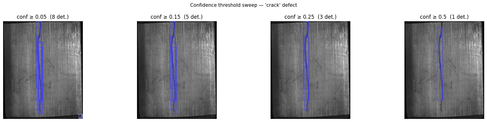
Compare with the output below
# Pick the weakest class and show effect of lowering the threshold
worst_cls_id = int(np.argmin(list(val_results.seg.ap50)))
worst_cls_name = DEFECT_CLASSES[worst_cls_id]
print(f"Weakest class: '{worst_cls_name}'")
# Find ALL val images containing this class, then pick the one
# with the largest defect area (most visually informative)
val_lbl_dir = OUTPUT_ROOT / "val" / "labels"
val_img_dir = OUTPUT_ROOT / "val" / "images"
candidates = []
for lf in val_lbl_dir.glob("*.txt"):
total_area = 0
has_class = False
for line in lf.read_text().strip().splitlines():
if not line:
continue
parts = line.split()
if int(parts[0]) == worst_cls_id:
has_class = True
# approximate polygon area as bounding box of its points
coords = np.array(parts[1:], dtype=float).reshape(-1, 2)
w = coords[:, 0].max() - coords[:, 0].min()
h = coords[:, 1].max() - coords[:, 1].min()
total_area += w * h
if has_class:
img_path = next(
(val_img_dir / f"{lf.stem}{ext}" for ext in [".jpg", ".png"]
if (val_img_dir / f"{lf.stem}{ext}").exists()), None)
if img_path:
candidates.append((total_area, img_path))
# Pick the image with the largest defect area — most likely to show clear masks
candidates.sort(reverse=True)
worst_img = candidates[0][1] if candidates else None
print(f"Found {len(candidates)} val images with '{worst_cls_name}'")
if candidates:
print(f"Selected: {worst_img.name} (normalised defect area: {candidates[0][0]:.4f})")
if worst_img:
thresholds = [0.05, 0.15, 0.25, 0.50]
fig, axes = plt.subplots(1, len(thresholds),
figsize=(4.5 * len(thresholds), 4))
fig.suptitle(f"Confidence threshold sweep — '{worst_cls_name}' defect",
fontsize=11)
for ax, thr in zip(axes, thresholds):
pred = model_eval.predict(
str(worst_img),
conf = thr,
device = DEVICE,
verbose = False,
max_det = 50, # ← fixes NMS time limit warning
iou = 0.3,
agnostic_nms = True # collapses cross-class duplicates on the same crack
)[0]
img_rgb = cv2.cvtColor(cv2.imread(str(worst_img)), cv2.COLOR_BGR2RGB)
if len(pred.boxes) and pred.masks is not None:
det = sv.Detections.from_ultralytics(pred)
img_rgb = mask_ann.annotate(img_rgb.copy(), det)
img_rgb = box_ann.annotate(img_rgb, det)
n = len(pred.boxes)
ax.imshow(img_rgb)
ax.set_title(f"conf ≥ {thr} ({n} det.)")
ax.axis("off")
plt.tight_layout()
plt.show()
else:
print(f"No val image found for class '{worst_cls_name}'")
Weakest class: 'crack'
Found 8 val images with 'crack'
Selected: exp3_num_249637.jpg (normalised defect area: 0.0629)
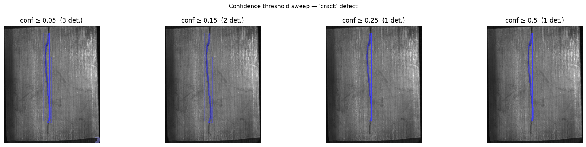
pred_debug = model_eval.predict(
str(worst_img), conf=0.15, device=DEVICE, verbose=False,
max_det=50, iou=0.3, agnostic_nms=True
)[0]
h, w = pred_debug.orig_shape
print(f"{'#':<4} {'Class':<10} {'Conf':>6} {'y1':>6} {'y2':>6} {'height':>8}")
print("─" * 44)
for i, (cls, conf, box) in enumerate(zip(
pred_debug.boxes.cls.int().tolist(),
pred_debug.boxes.conf.tolist(),
pred_debug.boxes.xyxy.tolist())):
x1, y1, x2, y2 = [int(v) for v in box]
print(f"{i:<4} {DEFECT_CLASSES[cls]:<10} {conf:>6.3f} "
f"{y1:>6} {y2:>6} {(y2-y1):>8}px")
# Class Conf y1 y2 height
────────────────────────────────────────────
0 crack 0.726 18 233 215px
1 crack 0.228 77 237 160px
5. Failure Analysis¶
# Show GT vs prediction for the weakest class specifically
worst_stems = []
for lf in val_lbl_dir.glob("*.txt"):
for line in lf.read_text().strip().splitlines():
if line and int(line.split()[0]) == worst_cls_id:
worst_stems.append(lf.stem)
break
show_stems = random.sample(worst_stems, min(4, len(worst_stems)))
fig, axes = plt.subplots(len(show_stems), 2,
figsize=(10, 3.5 * len(show_stems)))
fig.suptitle(
f"Failure analysis: '{worst_cls_name}'\nLeft: GT Right: Prediction (conf ≥ 0.85)",
fontsize=11)
for row, stem in enumerate(show_stems):
img_path = next(
(val_img_dir / f"{stem}{ext}" for ext in [".jpg", ".png"]
if (val_img_dir / f"{stem}{ext}").exists()), None)
if img_path is None:
continue
lbl_path = val_lbl_dir / f"{stem}.txt"
gt_img = render_yolo_seg_label(img_path, lbl_path)
pred = model_eval.predict(str(img_path), conf=0.85,
device=DEVICE, verbose=False)[0]
pred_img = cv2.cvtColor(cv2.imread(str(img_path)), cv2.COLOR_BGR2RGB)
if len(pred.boxes) and pred.masks is not None:
det = sv.Detections.from_ultralytics(pred)
pred_img = mask_ann.annotate(pred_img.copy(), det)
pred_img = box_ann.annotate(pred_img, det)
pred_img = label_ann.annotate(pred_img, det,
[f"{DEFECT_CLASSES[c]} {s:.2f}"
for c, s in zip(det.class_id, det.confidence)])
axes[row][0].imshow(gt_img); axes[row][0].axis("off")
axes[row][1].imshow(pred_img); axes[row][1].axis("off")
axes[row][0].set_title(stem[:25], fontsize=8)
plt.tight_layout()
plt.show()
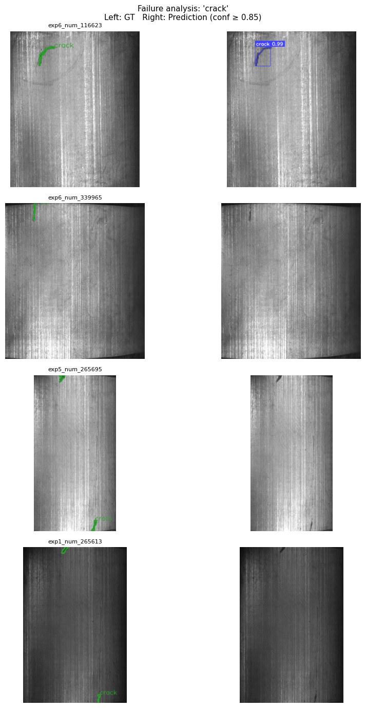
Discussion:
Are missed defects consistently small, low-contrast, or at image edges?
Does the model confuse any two defect types? (Check the predicted class labels)
What would you do with 3 more months and a GPU cluster to improve the weakest class?
6. What Segmentation Adds Over Detection¶
Now that we have pixel masks, we can compute things that bounding boxes cannot provide.
# Defect area measurement from predicted masks
# Pick a few val images and report: class, pixel area, percentage of image covered
val_imgs = list((OUTPUT_ROOT / "val" / "images").glob("*.jpg"))
sample_imgs = random.sample(
list((OUTPUT_ROOT / "val" / "images").glob("*.jpg")), min(8, len(val_imgs))
)
print(f"{'Image':<30} {'Class':>12} {'Conf':>6} {'Area (px²)':>12} {'Coverage':>10}")
print("─" * 74)
for img_path in sample_imgs:
pred = model_eval.predict(str(img_path), conf=0.25,
device=DEVICE, verbose=False)[0]
if not len(pred.boxes) or pred.masks is None:
continue
h, w = pred.orig_shape
for i, (cls_id, conf, mask_data) in enumerate(
zip(pred.boxes.cls.int().tolist(),
pred.boxes.conf.tolist(),
pred.masks.data.cpu().numpy())):
# mask_data is binary (0/1) at model resolution; resize to original
mask_full = cv2.resize(mask_data, (w, h),
interpolation=cv2.INTER_NEAREST)
area = int(mask_full.sum())
coverage = area / (h * w) * 100
print(f"{img_path.name[:28]:<30} "
f"{DEFECT_CLASSES[cls_id]:>12} "
f"{conf:>6.2f} "
f"{area:>12,d} "
f"{coverage:>9.2f}%")
Image Class Conf Area (px²) Coverage
──────────────────────────────────────────────────────────────────────────
exp3_num_328014.jpg blowhole 0.77 124 0.10%
This is what a bounding box cannot give you. In a real factory pipeline, this pixel-level area measurement feeds directly into:
Severity scoring: is the defect coverage > 1% of tile area? Flag for rejection.
Trend monitoring: is the average defect area increasing over the production shift?
Root cause analysis: are defects appearing in specific spatial regions of the tile?
7. Wrap-up and Forward Pointer¶
Summary¶
print("=" * 45)
print(" Afternoon session results summary")
print("=" * 45)
print(f" Model : YOLO11n-seg (pretrained COCO)")
print(f" Dataset : Magnetic Tile ({NC} defect classes)")
print()
print(f" Box mAP@0.50 : {val_results.box.map50:.4f}")
print(f" Mask mAP@0.50 : {val_results.seg.map50:.4f}")
print(f" Box mAP@0.50:0.95 : {val_results.box.map:.4f}")
print(f" Mask mAP@0.50:0.95 : {val_results.seg.map:.4f}")
print()
print(" Per-class Mask AP@0.50:")
for name, ap in zip(DEFECT_CLASSES, val_results.seg.ap50):
bar = "█" * int(ap * 20)
print(f" {name:<12} {ap:.3f} {bar}")
print("=" * 45)
=============================================
Afternoon session results summary
=============================================
Model : YOLO11n-seg (pretrained COCO)
Dataset : Magnetic Tile (5 defect classes)
Box mAP@0.50 : 0.8886
Mask mAP@0.50 : 0.7787
Box mAP@0.50:0.95 : 0.5583
Mask mAP@0.50:0.95 : 0.4282
Per-class Mask AP@0.50:
blowhole 0.818 ████████████████
crack 0.698 █████████████
break 0.723 ██████████████
fray 0.747 ██████████████
uneven 0.908 ██████████████████
=============================================
The remaining open problem¶
Both today’s sessions assumed labelled defect examples were available for training. In many real industrial settings, you have thousands of images of good tiles but only a handful of defective ones — not enough to train a supervised detector.
This motivates anomaly detection: train only on defect-free images, learn what “normal” looks like, and flag anything that deviates. The state-of-the-art method for this is PatchCore (Roth et al., 2022), which:
Extracts patch-level features from a pretrained backbone on normal images only
Builds a memory bank of normal patch features
At test time, flags patches whose features are far from the memory bank
PatchCore achieves near-perfect AUROC on the MVTec dataset — using zero defect labels. The Magnetic Tile MT_Free folder (which we used only as background today) is exactly the kind of data PatchCore trains on.
That is a natural next step beyond today’s supervised segmentation.